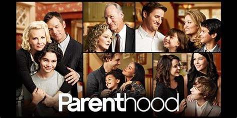

This Is Us is one of the most popular drama series on television right now. Viewers can’t resist crying as they watch the latest trials and joys of the Pearson family. They want to be a part of the family. With its rich characters, brilliant writing, and unexpected plot twists, This Is Us always knows how to deliver tearjerker moments. But it’s not the only show like this. Many TV shows center around family dramas. They make us laugh, they make us cry. They often feature a Jack Pearson-like character. If you’re craving to binge-watch another family drama like This Is Us, check out these 10 shows that will certainly fill in the void until the beloved NBC show returns. if you're looking to kill time with another show that's immediately addicting, we've got your back. These shows will fill the Pearson-shaped void in your heart, whether you're craving a tearjerker, a twisty non-linear narrative, or just a good old fashioned family drama.
| Show's Name | A Photo | For More Information |
|---|---|---|
| Parenthood |  | Visit imdb |
| A Million Little Things | Visit To Watch And Read More | |
| Friday Night Lights | Visit imdb |